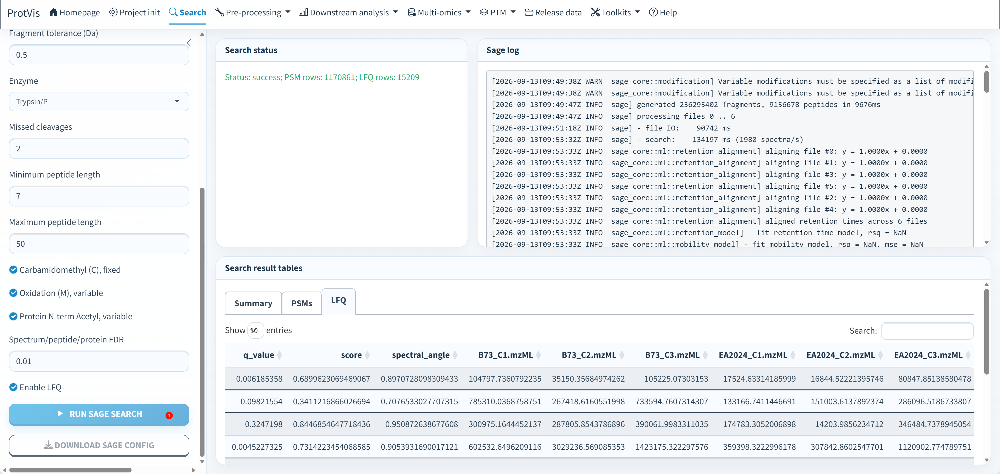

Raw/mzML + Sage search
When to use this workflow
Use Project init → Search when your starting point is converted .mzML files rather than a precomputed protein-abundance table. ProtVis registers sample metadata, the mzML directory and a protein FASTA, runs Sage, then converts Sage LFQ output into the same canonical ProtVis_dataset used by all downstream modules.
The route is:
Project init → Search → Correct Noise → Data Transformation → Data Imputation → Data Normalization
The top-level Search tab is intentionally visible only while Raw is selected in Project init.
Prerequisites
Before opening Search, complete the Raw-specific part of Project init:
- Set a writable working directory.
- Load or upload sample information containing
sample_idandmzml_file. - Upload the matching protein FASTA.
- Select the directory containing the mzML files.
- Click Check mzML files and resolve every Missing or Invalid extension row.
- Select Raw.
- Click Project init to create the Sage staging object.
A Raw/Sage project does not need a protein expression matrix before Search. ProtVis creates a Sage_staging project object and fills the expression layer only after LFQ results are available.
Example dataset: PXD065315
The built-in Raw example is based on the public maize proteomics dataset PXD065315, titled Proteomics analysis of B73 and EA2024 maize plants under control and drought conditions. The complete dataset contains 12 Thermo .raw files: six control samples and six drought samples. The current ProtVis built-in example uses only the six control samples shown below.
| ProtVis sample | Original PRIDE RAW file | mzML filename used by ProtVis |
|---|---|---|
B73_C1 |
B73_C1.raw | B73_C1.mzML |
B73_C2 |
B73_C2.raw | B73_C2.mzML |
B73_C3 |
B73_C3.raw | B73_C3.mzML |
EA2024_C1 |
EA2024_C1.raw | EA2024_C1.mzML |
EA2024_C2 |
EA2024_C2.raw | EA2024_C2.mzML |
EA2024_C3 |
EA2024_C3.raw | EA2024_C3.mzML |
PRIDE hosts the original vendor .raw files for PXD065315. The .mzML files used by ProtVis are local conversions of those RAW files and are not separate files deposited in PXD065315. Convert the six control RAW files with ProteoWizard/MSConvert or another validated converter, and keep the output names exactly as listed in the mzML filename used by ProtVis column unless you also update sample_info$mzml_file.
A convenient directory after conversion is:
PXD065315_control/
├── B73_C1.mzML
├── B73_C2.mzML
├── B73_C3.mzML
├── EA2024_C1.mzML
├── EA2024_C2.mzML
└── EA2024_C3.mzMLPoint Project init → Raw/mzML input to the directory containing these six converted files, then click Check mzML files.
Sage executable
ProtVis uses protvis_sage_executable() to resolve Sage.
On Windows, the package can use the bundled Sage executable at:
inst/extdata/sage/windows/sage.exeOn Linux or macOS, install Sage separately and make sage available on PATH.
You can verify discovery from R:
ProtVis::protvis_sage_executable()The Search page shows the resolved FASTA, mzML directory, Output, and Sage paths before execution.
Search parameters
The current Search interface exposes the following defaults:
| Parameter | Default |
|---|---|
| Precursor tolerance | 20 ppm |
| Fragment tolerance | 0.5 Da |
| Enzyme | Trypsin/P |
| Missed cleavages | 2 |
| Minimum peptide length | 7 |
| Maximum peptide length | 50 |
| Carbamidomethyl (C), fixed | enabled |
| Oxidation (M), variable | enabled |
| Protein N-term acetyl, variable | enabled |
| Spectrum/peptide/protein FDR | 0.01 |
| LFQ | enabled |
The generated Sage configuration uses target-decoy searching with rev_ as the decoy prefix. LFQ should remain enabled when the goal is to create a protein-by-sample matrix for downstream ProtVis analysis.
Run the search
The full-resolution screenshot below shows a completed Sage run for the six PXD065315 control samples. The left side contains the search parameters and the two numbered actions; the upper-right area reports Search status and the Sage log; the lower-right area exposes the result tables.

Before pressing the numbered controls, confirm that the FASTA path, mzML directory, output directory and resolved Sage executable are all correct. Review the enzyme, tolerances, modifications, peptide-length limits, FDR and LFQ settings; changing these values changes the database-search model and should be recorded as part of the analysis.
1. Run Sage Search. Click Run Sage Search once. ProtVis writes the current settings to the Sage configuration, starts Sage against every registered mzML file, and streams progress into Search status and Sage log. While a search is running, duplicate-click protection prevents the same operation from being launched a second time.
Follow the log until the status becomes success or an actionable error is reported. In the illustrated example, the completed run reports 1,170,861 PSM rows and 15,209 LFQ rows. These numbers document this particular search; they are not expected thresholds and will vary with organism, FASTA, acquisition depth, search parameters and sample number.
After success, inspect the result tabs. Summary provides the compact search-level overview. PSMs contains peptide-spectrum-match level results and is useful for verifying that the search produced substantial target evidence. LFQ contains the quantitative output used to construct the downstream protein-by-sample matrix; verify that the expected six mzML/sample columns are represented before moving to preprocessing.
2. Download Sage Config. Click Download Sage Config to save the exact generated configuration independently. The project also records the configuration and search provenance in ProtVis_dataset, but keeping the downloaded JSON alongside the mzML/FASTA inputs is useful for external reproduction, troubleshooting and methods reporting.
Warnings can be informative even when Sage ultimately finishes successfully. Preserve the log/configuration and check unexpected modification warnings, input-file failures, unusually small result tables, or missing LFQ sample columns before treating the search as finalized.
Files produced by Sage
ProtVis writes the search into the project Sage_search directory. The principal files are:
Sage_search/
├── sage_config.json
├── results.sage.tsv
├── lfq.tsv
└── results.jsonHow LFQ becomes a ProtVis matrix
After a successful search, ProtVis reads the Sage LFQ table, finds the proteins/protein field, matches LFQ sample columns to the registered mzML filenames and sample_id values, removes rev_ decoy identifiers, and aggregates target intensities into a protein-by-sample matrix.
The completed object uses the workflow stage Sage_complete and receives a traceable name such as:
ProtVis_dataset__Sage_database_search__v2The original staging metadata and process history are retained. Search parameters, log information, configuration, result tables, and produced files are recorded under the project, including:
dataset$analysis_results$Sage_database_searchSearch output files that exist on disk are also registered in other_files with path, filename, size, MD5 and attachment time.
Stage handoff to preprocessing
A successful Search writes two compatibility snapshots:
Step2_sage_database_search.rda
Step2_remove_unreliable_peptide.rdaStep2_sage_database_search.rda preserves the Sage-specific stage name for compatibility. The important cross-source handoff is:
Step2_remove_unreliable_peptide.rdaThis is the data-source-independent Step2 checkpoint consumed by Correct Noise. Downstream preprocessing therefore does not need to know whether Step2 originated from Sage, MaxQuant, or another supported input path.
Continue with Correct noise.
Recovery after restarting ProtVis
ProtVis can recover a completed Sage search from the existing Sage_search directory when lfq.tsv is present and the configuration still resolves the FASTA and mzML inputs. Recovery reads the prior configuration and result tables instead of requiring the database search to be repeated simply because the Shiny session restarted.
Correct Noise also checks the active ProtVis_dataset first. If no in-memory object is available, it looks for the canonical Step2_remove_unreliable_peptide.rda, then Sage-specific/older stage files as fallbacks.
For a recoverable Raw/Sage project, keep the working directory, Sage_search folder, stage files, and portable ProtVis_dataset export together. Moving only lfq.tsv away from the FASTA/configuration context weakens provenance and may prevent automatic recovery.
Troubleshooting
Search tab is missing. Return to Project init and select Raw. Search is hidden for other source types by design.
Sage is shown as Not found. On Windows, reinstall the current ProtVis build and confirm the bundled executable is present. On Linux/macOS, install Sage and place it on PATH.
No .mzML files were found. Select the directory that directly contains the converted files and rerun Check mzML files.
Sample names do not map to LFQ columns. Confirm that sample_info$mzml_file matches the registered mzML filenames. ProtVis falls back to filename stems only when a direct sample mapping is unavailable.
Correct Noise says the expression matrix is unavailable. The current object is probably still a Sage staging object. Complete Search successfully first so LFQ can be converted to the protein abundance matrix.